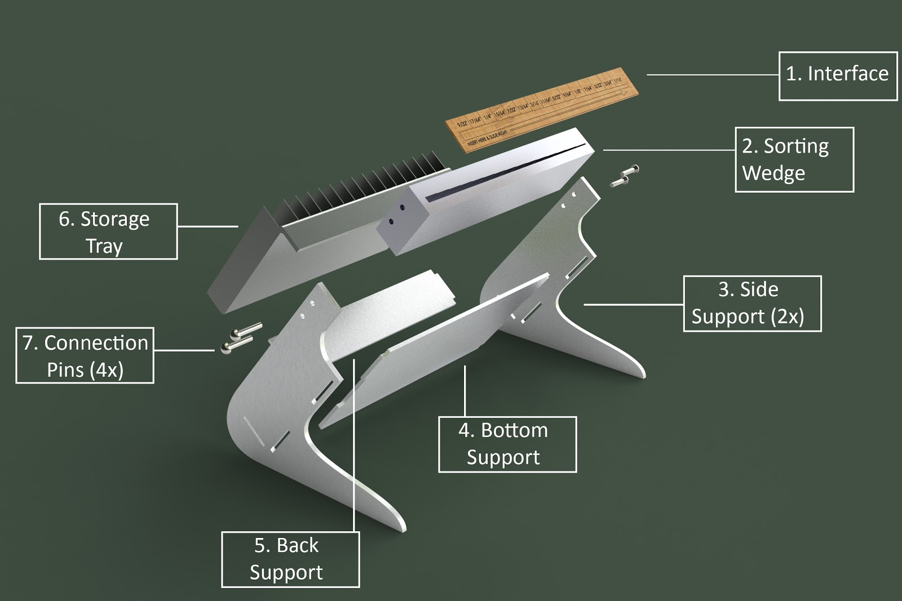
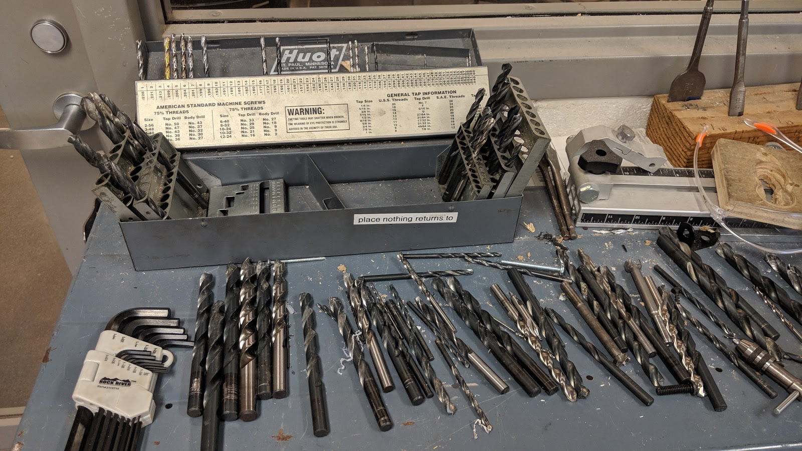
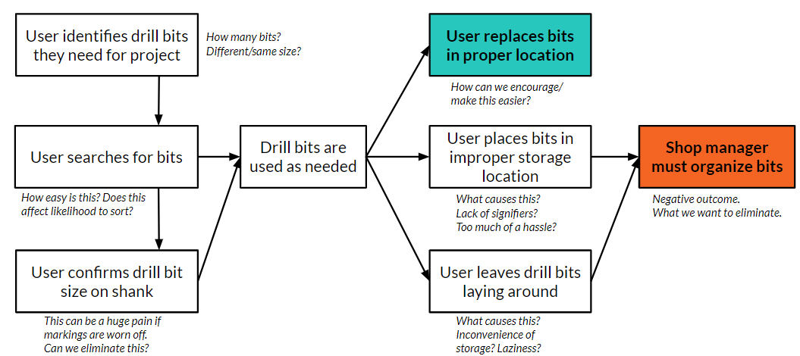
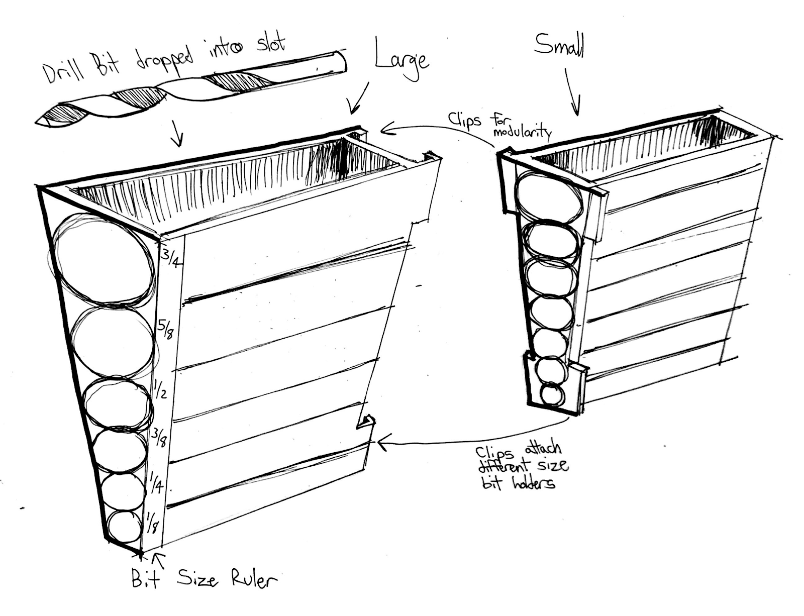
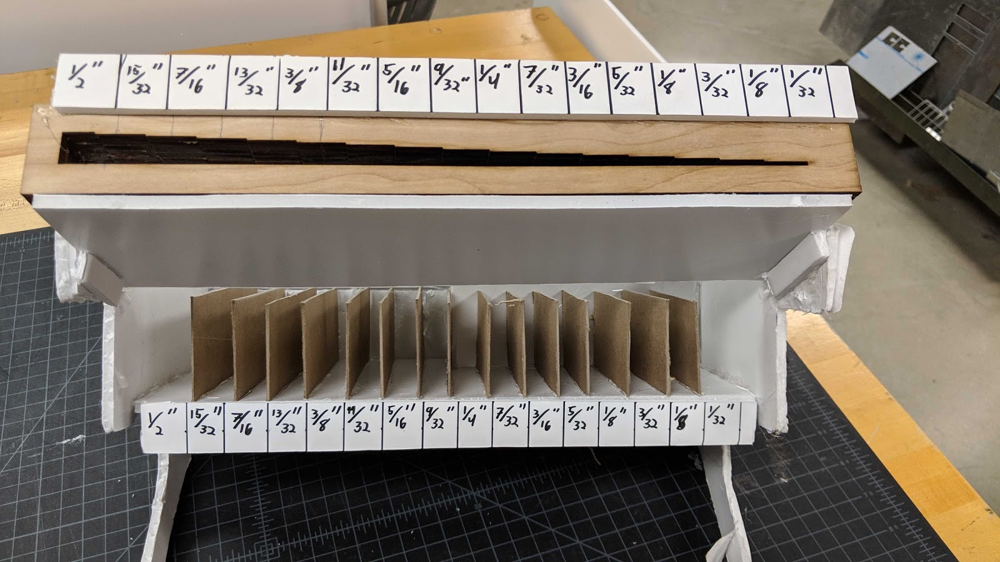
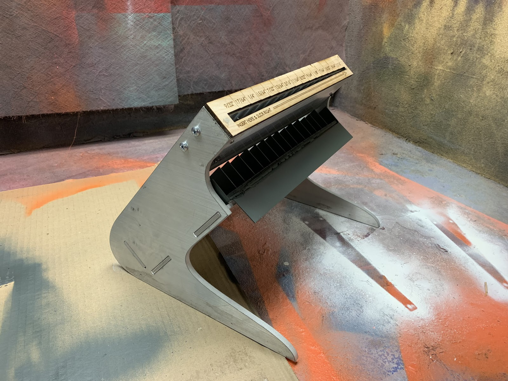
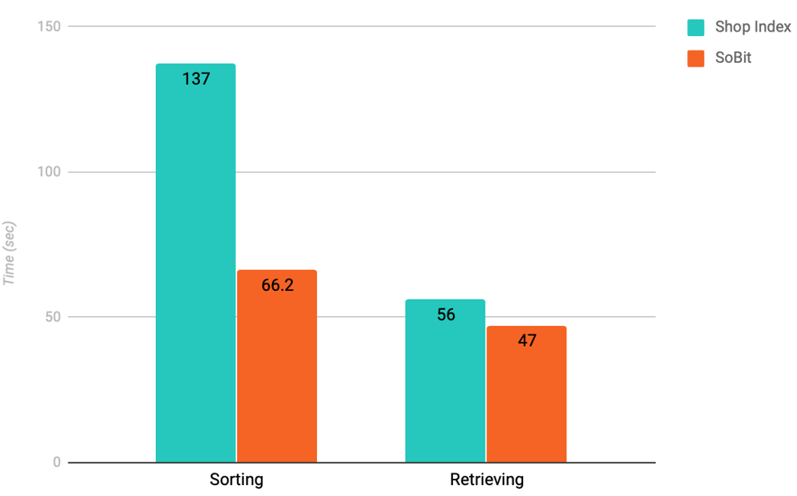
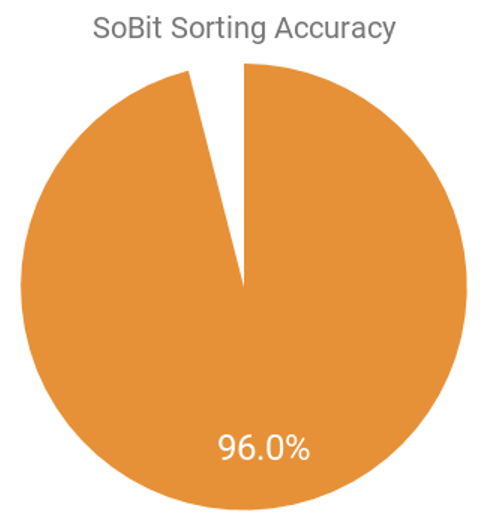

SoBit
a solution to unsorted drill bits in workshops

A team of Northwestern students and I identified a problem in Northwestern's shared workshop: no one sorted their bits.

We journey-mapped the problem and identified the consequences of leaving it unsolved:

- drastic increase in drill bit extraction time for shop-goers
- shop workers spending valuable time sorting bits using the slow, antiquated practice of indexing
- haphazard placement of bits around the shop leave bits liable to damage or loss

Then, we identified our design requirements:
User Requirements
- encourages drill bit sorting
- intuitive use
- compatible with fractional, numbered, and lettered drill bits
- able to process and store multiple bits of same dimension
- makes drill bit extraction quick and easy
Performance Requirements
- durable
- consistent and accurate sorting over time
- preserves quality of drill bit
With these requirements in mind, we ideated possible solutions.


After considering many design directions, we moved forward with an analog measuring and sorting device.


The design incorporates a "sorting-wedge" into the top surface. A user slides a bit by its shank from left to right, the interface stops the bits at its proper dimension.
And then we prototyped with higher fidelity.

We gained insights through user and performance tesing—insights that informed materials choices, manufacturing methods, and design geometry.

Here are the results:


Next steps:
- Full size-range solution
- In later iterations, the next version of SoBit would need a modular sorting interface that sorts lettered, numbered, and fractional bits.
- Test angles of interface and signage
- In order to enhance the user experience, SoBit would need an adjustable interface angle. This would grant accessibility to users of different heights.
- Eliminate sorting error
- SoBit's principle objective is to perfectly sort drill bits quicker than conventional methods; however, a sorting mechanism is useless without accuracy. With tighter tolerances on manufacturing and redesigned sorting bins, SoBit's error would drop to zero.